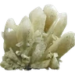

Mineral Grimoire
 Scolecite
Scolecite
Scolecite is a monoclinic silicate mineral from the Zeolite family, containing silicon and oxygen. It is a Synergy Twelve stone, relatively new to the crystal world. Its name derives from the Greek skolex ("worm"), referring to the way the stone curls when held to a blowtorch. Scolecite is a gentle, high-vibration stone that promotes inner peace and opens all the heart chakras, especially the heart seed.
Appearance
Translucent, ribbed crystal formation in white, clear, or yellow.
Origin
India, Iceland
Attributes
Scolecite is a gentle, high vibration stone that promotes inner peace and opens all the heart chakras, especially the heart seed, connecting it to the third eye and soma chakra. Similar to Natrolite, Scolecite has a slightly earthier vibration. It is appropriate for people new to high vibration crystals or with a particularly sensitive energy field. The inner light carried by Scolecite infuses peace into the core of your being, connecting you to the highest energies in the universe and multi-dimensional realms. An excellent journeying crystal, this serene stone assists with lucid dreaming and dream recall. Meditate with it to reach the deeper meaning of significant dreams or connect to higher guidance or benign extraterrestrials and star beings.
Place Scolecite on the chakras along the back and Natrolite on the front to accommodate a download of high vibrational energies or to realign the physical body with the lightbody. Wearing Scolecite ensures a healthy auric field and heals holes, splits or fragmentation where negative energies or entities could attach. Scolecite assists in restructuring thought patterns and shaping everyday reality into a positive outcome. It hooks out the last remnants of detrimental patterns or beliefs, clearing the etheric blueprint and the mental body.
Scolecite is extremely calming, encouraging unselfish love of one's self and inner contentment. It dissolves anxiety and fear, instilling a quiet confidence that faces life with equanimity.
Grid Scolecite to create an area of total peace. It calms disturbed energies and creates a safe, sacred space in which to live, work and have your being. This crystal harmonizes the energies between lovers and loved ones and helps those whose heart has been turned to stone to gently release the traumas of the past and love again. Physically Scolecite resonates with the nerves and neural pathways, bringing the body back into equilibrium and encouraging control of autonomous processes.
Healing
Anecdotal evidence suggests Scolecite is effective for MS and neurological rebalancing, and for realigning the spinal column and associated nerves. It further suggests an anti-seizure effect and that it may help benign tumours of the brain. The calcium component energetically strengthens bones. Scolecite is used for intestinal conditions including parasites and IBS, and supports the circulatory system and lungs.
Position
Place or grid as appropriate or disperse gem essence around the aura. Place in your pillowcase to encourage deeper sleep and open up to receiving spiritual messages in your dreams. Keep Scolecite in the home or anywhere you wish to surround in safeguarding, protective energies.
Chakra Work
Scolecite is primarily a Soul Star Chakra activator, propelling ascension and expanding interdimensional awareness. Hold it during meditation to open communication between you and the higher realms. Placed on the heart, it soothes past pain and clears the heart space, guiding you to a state of greater peace, awareness, and universal connection. For advanced practitioners, Scolecite facilitates interdimensional travel and transports you to higher dimensions, imparting the peace and awareness that comes with connecting with higher beings. It powerfully cleanses the aura and channels ancient wisdom, and is especially potent for clearing and healing intergenerational trauma.
Spellworking
Partners
 Amethyst amplifies Scolecite's spiritual vision and dream work, deepening meditation and connection to higher guidance.
Amethyst amplifies Scolecite's spiritual vision and dream work, deepening meditation and connection to higher guidance.  Tanzanite deepens its connection to universal consciousness and higher-dimensional wisdom.
Tanzanite deepens its connection to universal consciousness and higher-dimensional wisdom.
Lore
Silicate minerals like Scolecite make up a significant portion of Earth's crust and have also been found on the moon and in meteorites. Scolecite is known as a gem of interdimensional awareness that propels ascension, aids dream interpretation, deepens universal consciousness, and brings inner peace and a flow of light energy. Some say Scolecite carries the vibration of "om" - the sound of the name of God. Like the "om" sound when it is chanted, Scolecite brings an immediate sense of peace and spiritual understanding.
Magickal Message
"You are just one part of a cosmic web, placed on this earth to embody peace, healing, light, and love. Act in concert with the highest good of all, and you will find peace."